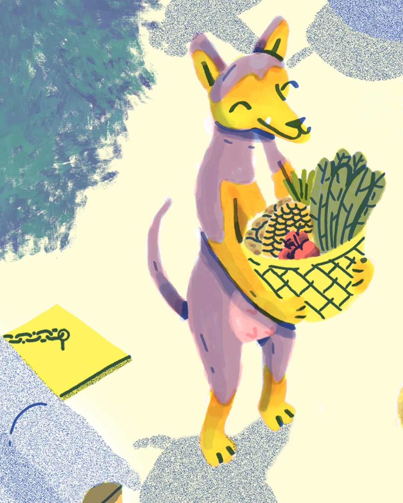
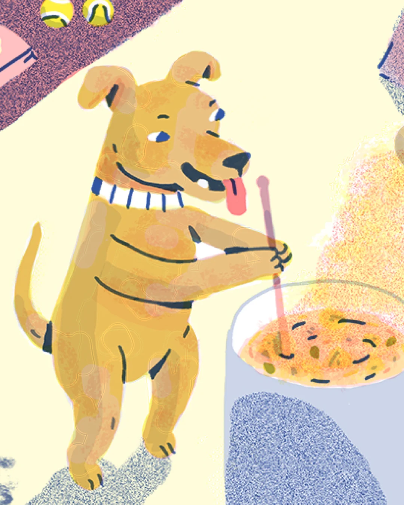
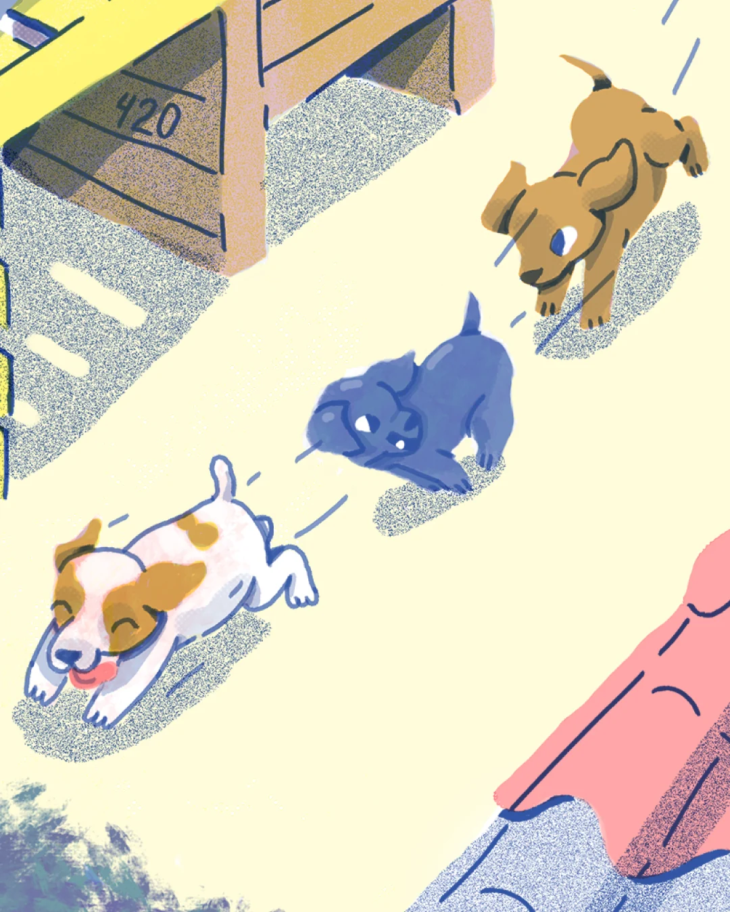
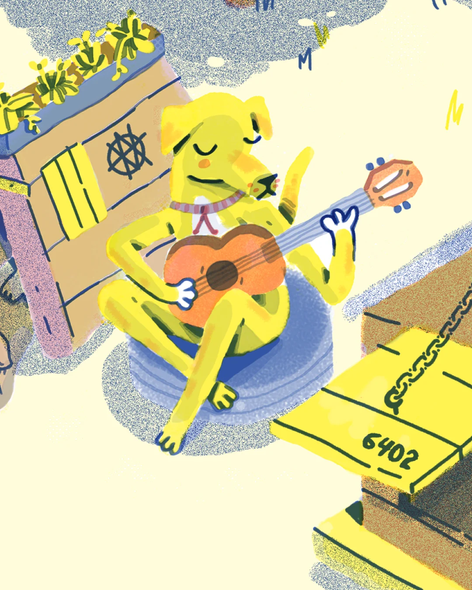
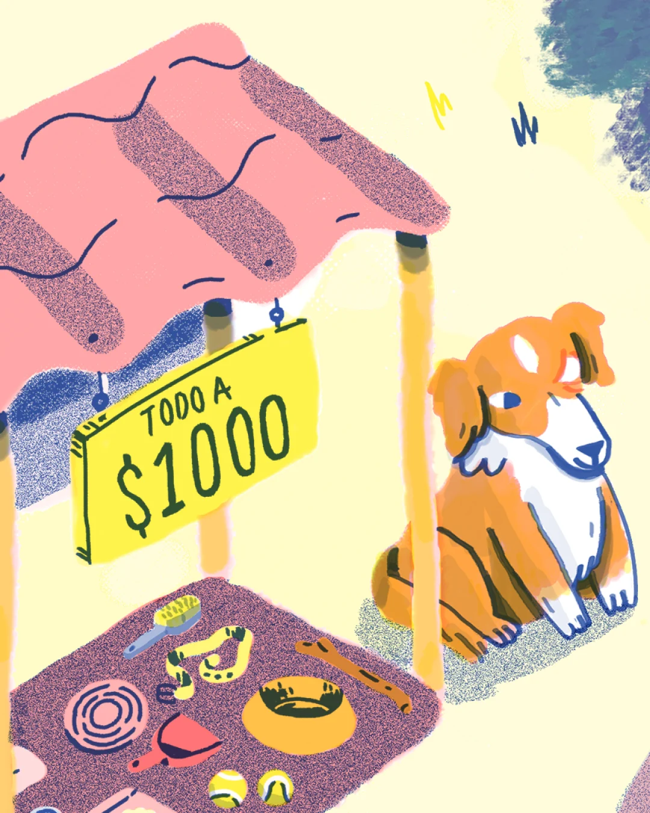
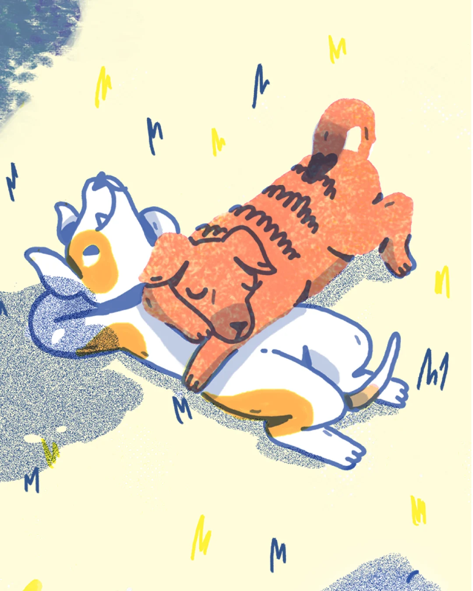

Villa perruna
Cartel de un hogar de paso para perrosPoster for a temporary home for dogs
Cartel para recaudar fondos de una villa de perros en Bogotá, que recoge perros de la calle y les da un hogar de paso mientras encuentran una familia. Es un lugar de apoyo mutuo: cada perro llega con su historia, sus traumas y sus dolores, que se van sanando en la convivencia y la construcción de comunidad.
A fundraising poster for a dog shelter in Bogotá that takes in street dogs and gives them a temporary home until they find a family. It is a place of mutual support: each dog arrives with its own story, traumas and pain, which heal through living together and building a community.








Detalles del cartel.Poster details.